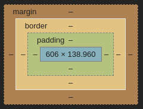

When it comes to Margin, Border and Padding the best way to differentiate them is to simply use what is called the CSS box model, it is a common term used in web development to represent elements and their respective Padding, Border and Margin on a page.
In the image above you can see a screenshot of the box model with different colored sections representing the different attributes e.g Padding, Border, Margin.
Now imagine this box in a real life context, let's say you sold some kind of item online, this item could be anything, an old laptop for example, and you have to ship it to the buyer, obviously you can't just send the laptop as is, otherwise it would get damaged.
So you get some foam and/or bubble wrap ("The Padding") and wrap the laptop up with it to protect it, then you get a cardboard box to actually contain the item and the Padding (This is "The Border"), and finally you have the distance of everything outside of the box (This would be "The Margin")